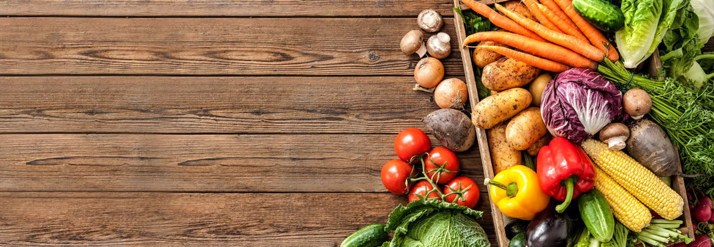
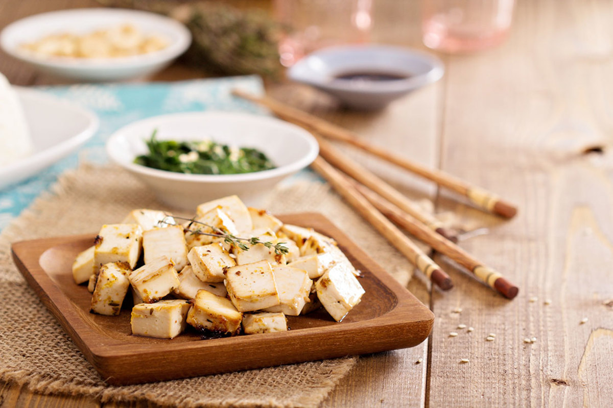
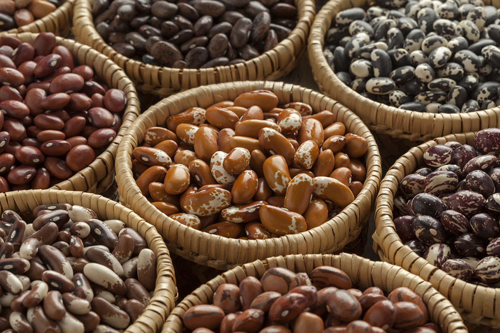

|  |
4 Best Protein Sources for beginers(vegan) |
1. TofuConsider this soybean block a blank canvas: it will soak up the flavors of whatever you add to it. Use silken varieties for blending into smoothies and puddings; save firmer tofu for baking or stir-frying into chewy pieces and tossing into salads, sandwiches, veggie bowls, and noodle dishes. In addition to protein, tofu delivers a dose of bone-building calcium if its made with calcium sulfate, notes Warren. Check for it in the ingredients list on the label. Tip: Short on time? Grab pre-seasoned baked tofu by brands such as Wildwood or Nasoya. Protein: 10 grams per 4-oz. serving firm tofu |
 |
2. BeansA helping of beans makes any dish more filling, thanks to an abundance of protein and fiber. “Being rich in both types of fiber soluble and insoluble beans also help lower cholesterol and promote healthy digestion,” says Warren, who suggests eating a variety, such as chickpeas, black beans, and heirloom beans, for the widest range of nutrients. Cook a big batch of dried beans for use throughout the week, or stock up on cans with BPA-free linings and no added salt. Tip: Add a strip of kombu seaweed to beans as they cook to make them more easily digestible. Protein: 7 grams per 1/2-cup serving cooked black beans |
 |
3.EggsStarting your day with an egg can help curb cravings later in the day skip the yolk. a great source of the nutrient choline, which is vital for cells to function properly says Warren. Egg yolks are also rich in lutein and zeaxanthin, antioxidants that help maintain eye health. Note: the U.S. Department of Agriculture recommends ?consuming less than 300 milligrams cholesterol per day. One large egg clocks in at 186 milligrams. Tip: Check the Cornucopia Institute Organic Egg Scorecard to see how different egg companies stack up. Protein: 6 grams per large egg |
4. Greek YogurtSwap out regular yogurt for this thicker, strained variety, which has up to twice as much protein. Warren forgoes non-fat yogurt in favor of 2% or even whole, which will leave you feeling fuller and more satisfied. Go organic, when possible: recent research shows that organic milk contains more heart-protective omega-3 fatty acids than its conventional cousin. Look for plain Greek yogurt, and sweeten it yourself using fruit or a natural sweetener such as agave or honey. Tip: Prefer savory to sweet? Add a few spoonfuls of Greek yogurt to blended soups and sauteed greens. Protein: 17 grams per 6-oz. serving 2% Greek yogurt |